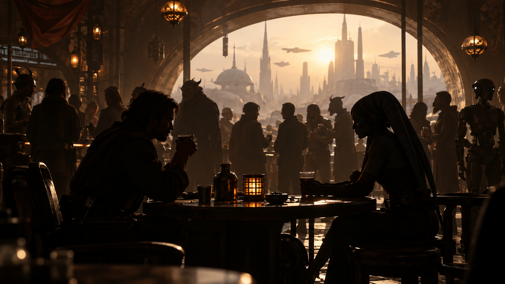

CHAPTER 01 / MISSION LOG
Η συντεχνία
ΣΚΗΝΗ ΠΡΩΤΗ

Οι δύο κυνηγοί επικηρυγμένων κάθονταν στην αίθουσα της Συντεχνίας, όταν ο σύνδεσμός τους εμφανίστηκε μπροστά τους και ακούμπησε πάνω στο τραπέζι έναν ηλεκτρονικό φάκελο.
«Έχω μια δουλειά για εσάς.»
Στην οθόνη εμφανίστηκε το πρόσωπο ενός άνδρα με αυτοκρατορική στολή. Cassian Varek, διοικητής του αυτοκρατορικού εμπορικού σταθμού ISS Dominion’s Reach.
Οι κατηγορίες εναντίον του ήταν σοβαρές: δωροληψία, παράνομες κατασχέσεις φορτίων και χρησιμοποίηση αυτοκρατορικού προσωπικού για την εκτέλεση εγκληματικών δραστηριοτήτων. Σύμφωνα με τον φάκελο, ο Βάρεκ είχε μετατρέψει τη θέση του σε προσωπική επιχείρηση, εκμεταλλευόμενος τόσο τους εμπόρους που περνούσαν από τον σταθμό όσο και τους ίδιους τους ανθρώπους που υπηρετούσαν υπό τις διαταγές του.
Στο κάτω μέρος της επικήρυξης αναγράφονταν οι όροι:
100 αυτοκρατορικές μονάδες για την εξόντωσή του.
200 αυτοκρατορικές μονάδες για τη σύλληψη και την παράδοσή του ζωντανού.
Η δεύτερη επιλογή ήταν σαφώς πιο επικερδής και αναμφίβολα πιο δύσκολη.
Οι δύο κυνηγοί δέχτηκαν την αποστολή και έφυγαν μαζί από τη Συντεχνία. Δεν είχαν προχωρήσει πολύ, όταν μια φιγούρα ξεπρόβαλε αθόρυβα από τις σκιές.
Ήταν ένα ερπετοειδές πλάσμα, κοντό και ευκίνητο, με κινήσεις τόσο προσεκτικές ώστε κανείς από τους δύο δεν το είχε ακούσει να πλησιάζει. Τους συστήθηκε ως κυνηγός επικηρυγμένων. Ειδικότητά του ήταν η παρακολούθηση, η διείσδυση και η αθόρυβη κίνηση, ικανότητες που θα μπορούσαν να αποδειχθούν πολύτιμες σε έναν αυτοκρατορικό σταθμό γεμάτο φρουρούς.
Ο Βάρεκ βρισκόταν προστατευμένος μέσα στο ίδιο του το οχυρό. Αν ήθελαν να τον πάρουν ζωντανό και να κερδίσουν ολόκληρη την αμοιβή, θα χρειάζονταν κάθε πλεονέκτημα που μπορούσαν να αποκτήσουν.
Οι τρεις τους συμφώνησαν να δουλέψουν ως ομάδα. Αν η αποστολή πετύχαινε, θα μοιράζονταν την αμοιβή.
Ο στόχος τους ήταν πλέον ένας: Να μπουν στο ISS Dominion’s Reach, να βρουν Cassian Varek και, αν ήταν δυνατόν, να τον βγάλουν από εκεί ζωντανό.